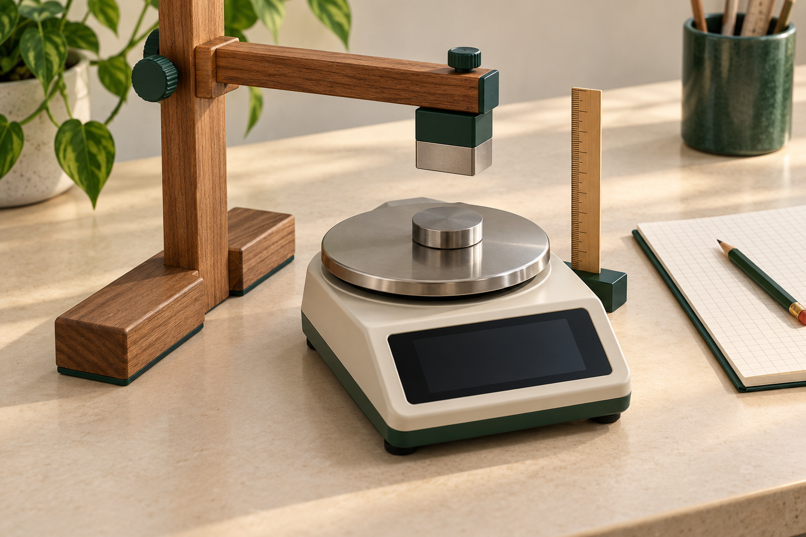

Loading the actual round record…
Experimental research / field notes 04Five adaptive rounds · two loops each
Electricity · magnetism · force claims
Energy. Fields.
Measurable forces.
Account for stored energy. Separate magnetic forces from scale readings. Give an antigravity claim a test that can distinguish it from ordinary causes.
Proposed physical setups · reproducible model results

Reading the current research record…Decision ledger ↗
01 / experiment bench
Start with a measurable boundary.
Each setup identifies the observable, the ordinary competing explanation, and the control needed before a stronger claim.
Scientific setup plates are loading.
Deliberately changeOne declared circuit condition
Keep fixedBoundary & instrument settings
ObserveVoltage, current and time
Still unresolvedAny new energy source
02 / electrical accounting
A voltage rise has an energy budget.
A passive series RLC circuit can magnify capacitor voltage. Track the signed power, storage and heat to see what that rise means.
Mean signed source power
W
Modeled input balances dissipation over a full cycle
Signed source powerTotal resistive heatRate of stored energy
Mean load power0.080 W
Mean internal loss0.020 W
Capacitor voltage gain2.00 ×
uI = dE/dt + RₗI² + RᵢI²
E = ½LI² + ½CV². Over a partial interval, include the change from initial to final stored energy. This calculator assumes an already established steady state; R3’s numerical report separately checks the transient energy balance. Frozen R3 contract ↗
03 / retained sound checkpoint
A reference has assumptions, too.
Rounds 1–2 remain part of the record. Explore their conditional sound model; every value below is stipulated.
Conditional corrected decay
s⁻¹
Zero bias under these premises
Recorded targetRecorded referenceStipulated target, before gain
Target alone2.00 s⁻¹
Stipulated target4.00 s⁻¹
Correction bias0.00 s⁻¹
α̂ = mᵣ − mₛ = α − αᵣ + (βᵣ − βₛ)
The reference removes the shared exponential gain only if its true amplitude is stable and both channels receive the same drift.
This is an identity for separated model envelopes. A physical one-microphone mixture needs its own separation, noise-floor, linearity and reference-stability checks. Frozen R1 contract ↗
04 / decisions & evidence
Five rounds. A visible trail.
Loop A produces evidence. Loop B challenges it. Rounds 1–2 retain sound findings; later rounds follow electricity, magnetism and force claims.
05 / interpretation & sources
Follow the words back to evidence.
Historical terms, government custody, patents and first-person accounts have different evidential roles. Read those roles beside the claim.
AAlchemy → modern material readingsSource-bound dictionary
Reading the material dictionary…
BSource reading recordLoading
Keep the raw evidence
Ready to document a real trial?
Use the complete protocol and record actual geometry, instrument settings, original readings and rejected trials.